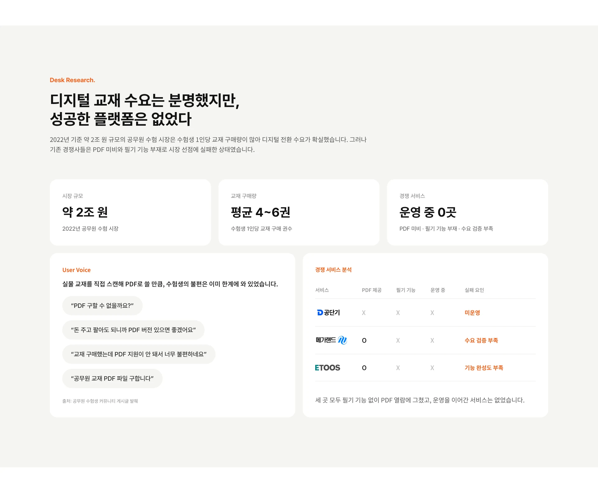
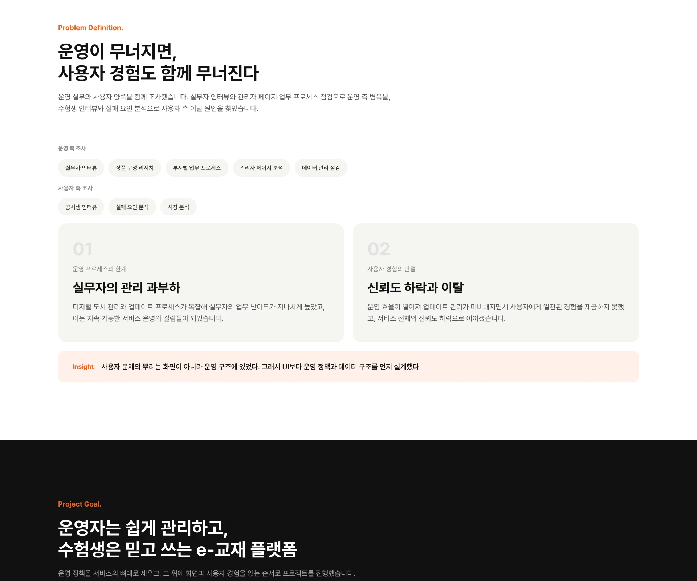
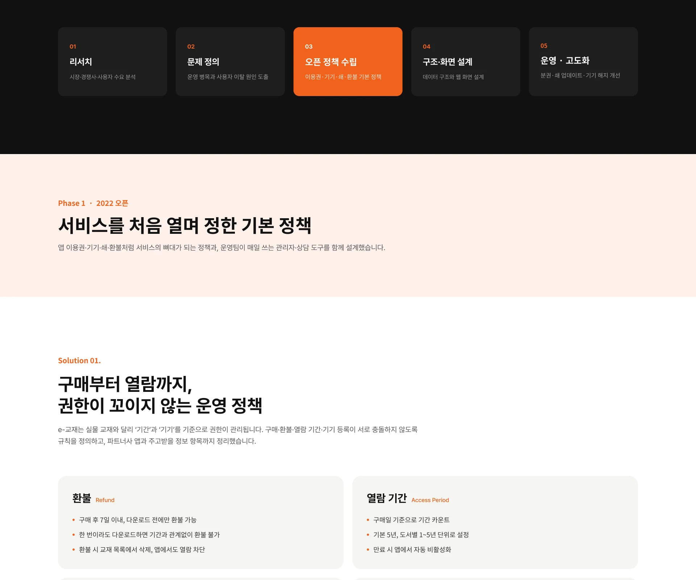
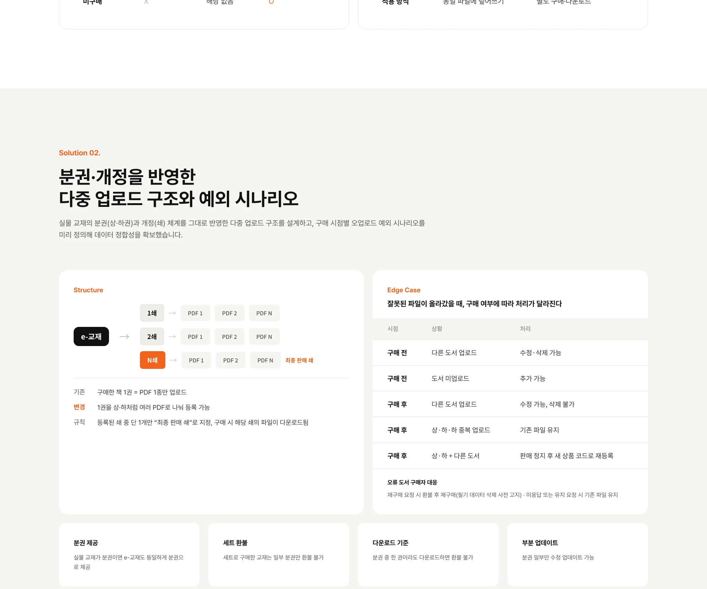
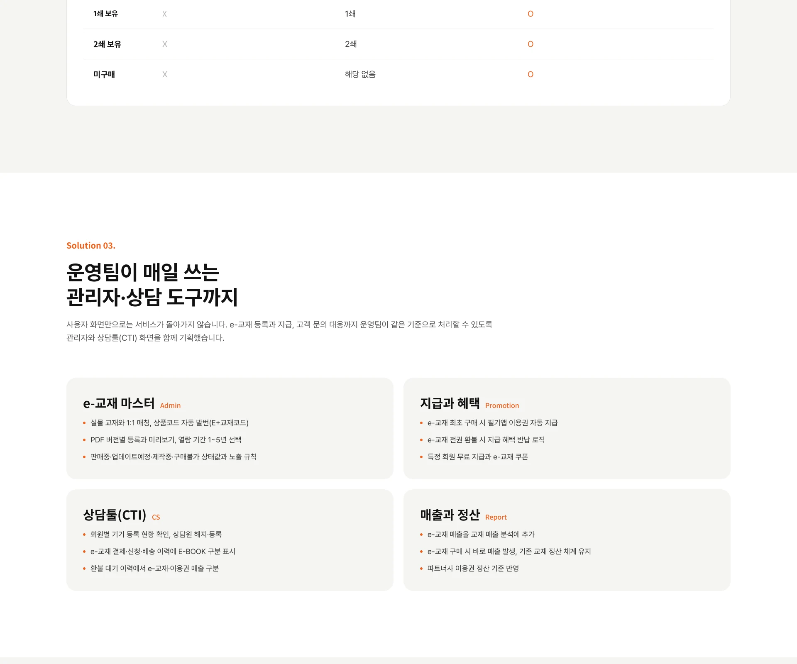
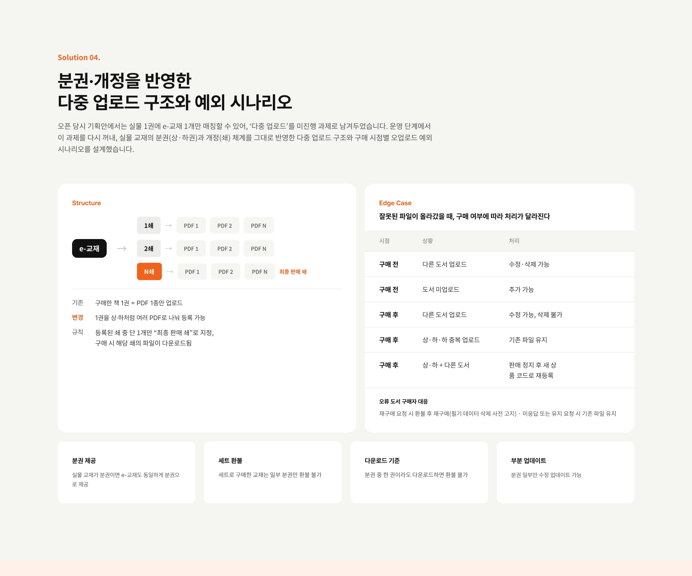
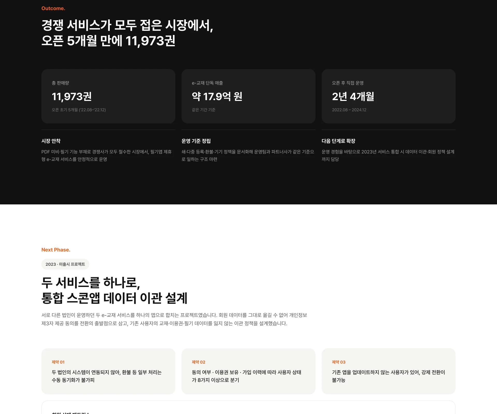
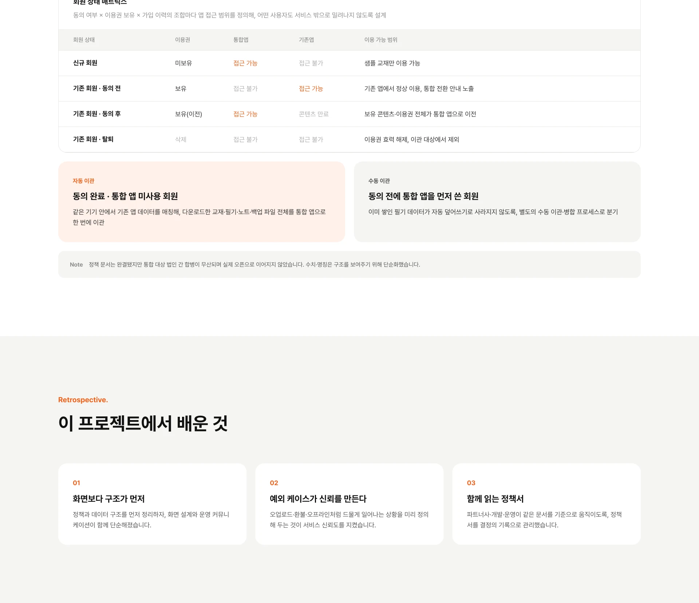
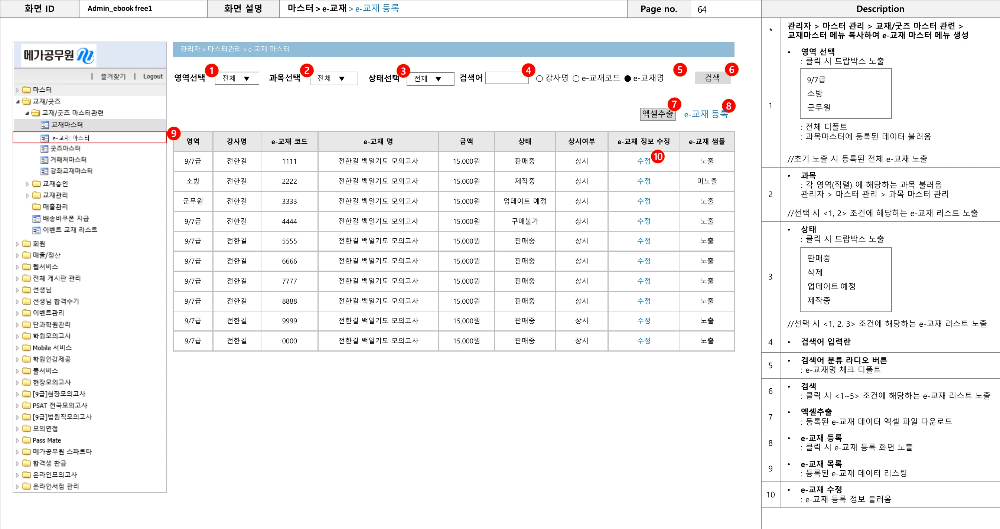

Appendix.
실제 화면설계서 발췌
온라인서점 e-교재 기능을 취합해 직접 작성한 83페이지 기획·화면설계서(v1.0, 2023.02) 중 일부입니다. 수험생 화면부터 상담 도구와 관리자 화면까지, 서비스가 닿는 모든 접점을 한 문서로 정의했습니다.
- 사이트맵 · 사용자/관리자
- 운영 정책
- PC 프론트 · 마이페이지/수강신청/결제
- 결제 취소 · CTI 상담툴
- 스콘 앱
- 기기 등록/해지
- 관리자 · 교재 마스터/매출 정산
- 온라인서점

